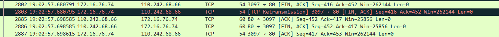

背八股文经常忘记，咨询学长之后，学长建议我一边实践一边记录，理解的更透彻一点。
1.浏览器访问访问网络发生了什么？
1. 获取网络的ip地址
查看浏览器缓存 -> 本机host文件 -> DNS(以下是DNS详细步骤)
请求
以访问常用的baidu为例，在抓到的包里面看，会发现存在以下四个包，选择第42个包之后会出现一些内容。
这个数据包包含数据链路层报文头（数据链路层），ip层头（网络层），udp头（传输层），dns头（应用层）。
- 在第二行是数据链路层，包含了从电脑mac地址到路由器mac地址去，然后路由器mac地址转发。
- 在第三行是IP地址端，为了方便分析，我特意把ipv6选项关闭，只剩下了ipv4。
- 在第四行是UDP，对于DNS来说，由于是使用的UDP协议，虽然有校验和字段，但是不经过检验。
- 第五行就是DNS，看出我们要查询的是
www.baidu.com，这里的type A指的是主机地址，还有常用的是CNAME指的是别名的正则名称。Class in指的是互联网，还有其他的字段指的比较早期的网络通信协议或者背废弃的通信协议。在下图我使用的是第43个包，可以看到有一个retransmitted request，这个是一种数据传输错误控制方法，使用确认消息和超时来实现不可靠服务的可靠数据传输。我们观察到dns没有在一定时间内回复，于是就启动了ARQ。
回答
回答和发送请求差不多，他会将请求的域名重复一遍，answer应答了我们请求的网站对应的IP地址，于是我们就知道了访问网站的ip地址。
2. TCP 握手
可以看出TCP三次握手的操作
C -> S ：SYN
S -> C : SYN , ACK
C -> S : ACK完成操作。
3. http/https
经过三次握手成功建立连接后，开始传送数据，如果是http协议的话，开始传送数据；如果不是，就会返回一个5开头的的重定向消息，告诉我们用的是https，那就是说IP没变，但是端口号从80变成443了，然后四次挥手。
之后将端口变成443再来一次tcp握手。
4. 断开连接的TCP 挥手
以下是TCP四次挥手
C -> S : FIN , ACK
S -> C : ACK
S -> C : FIN , ACK
C -> S : ACK
2. libevent
I/O框架库要么以Reactor模式实现，要么以Proactor模式实现，一般包含句柄（Handle），事件多路分发器（EventDemultiplexer）、事件处理器（EventHandler）和具体事件处理器（ConcreteEventHandler）、Reactor。
- 句柄： 事件源（I/O事件，信号和定时事件），通常和句柄绑定，当内核检测到就绪事件时，将通过句柄通知应用程序。Linux下，I/O事件得句柄是文件描述符，信号事件对应得句柄是信号值
- 事件多路分发器：内部调用
select,poll,epoll_wait函数 - 事件处理器和具体事件处理器：事件处理器执行事件对应得业务逻辑。通常包含多个
handle_event回调函数。I/O框架库提供得事件处理器是一个接口，用户要继承它来实现自己的事件处理器，并且包含一个get_handle方法。 - Reactor 这个是I/O框架的核心。
- handle_events：执行事件循环->等待事件，依次处理所有就绪事件对应的事件处理器。
- register_handler： 调用多路分发器的
register_event向事件多路分发器注册事件。 - remove_handler：删除事件多路分发器中的一个事件